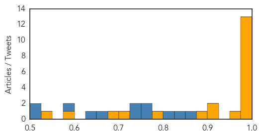
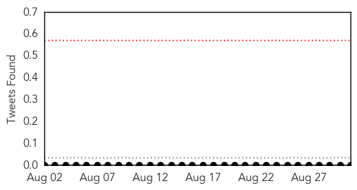

Ebola
30-Day Web Trend
0 alerts, 0 warnings

30-Day Twitter Trend
0 alerts, 0 warnings

Article Locations

Article Confidences
Top Articles:
- 1.000
- Experts to Investigate Fresh Case of Ebola In Sierra Leone
- 1.000
- Sierra Leone Confirms New Ebola Death
- 0.999
- Confirmation Of Ebola In Woman Who Died In Sierra Leone A Setback In Efforts To Declare Country Ebola-Free : LIFE : Tech Times
- 0.998
- How has Ebola psychologically affected Sierra Leone?
- 0.998
- Sierra Leone: Officials confirm new Ebola death
- 0.995
- Experts to investigate new Ebola case in north Sierra Leone
- 0.990
- Money Questions Swirl as Liberia Ebola Outbreak Nears End
- 0.982
- Liberia Completes 37 Days of Countdown to Ebola Free Status
- 0.982
- Ebola nurse working at NHS hospital that saved his life
- 0.979
- Emory Eye Center team makes second trip to West Africa in 'Quiet Eye' project
- 0.978
- Emory Eye Center team makes second trip to West Africa in 'Quiet Eye' project
- 0.977
- In battling an epidemic, be armed with vaccine
- 0.976
- Experts to research New Ebola Situation in North Sierra Leone – New You are able to Occasions
- 0.956
- Experts to research new Ebola situation in north Sierra Leone
- 0.919
- The Need for Global Health Education in Medical Training
- 0.910
- Suffolk Ebola victim Will Pooley now working for London hospital which saved his life
- 0.894
- LIBERIA: Foreign Ministry Appeals For Diplomats’ Role In Ebola Fight
- 0.777
- Children back to school with continued Hygiene Safety
- 0.721
- Sierra Leone News: As countdown to 42 zero infection continues… Schools re-open in Sierra Leone today « Awoko Newspaper
- 0.688
- Congratulations to our government and people of Sierra Leone
- 0.599
- First Escapes Ebola, Then Fights It
- 0.542
- LIBERIA: Sinoe Closes Border For 72 Hours
Top Tweets:
- 0.974
- Sierra Leone Reports Ebola Death - New York Times http://t.co/aUabHdA9Y3 ebola EVD
- 0.947
- Money Questions Swirl as Liberia's Ebola Outbreak Nears End - Voice of America http://t.co/4NiBhO31co ebola EVD
- 0.893
- Experts to Investigate New Ebola Case in North Sierra Leone - New York Times http://t.co/lcURfH8lVE ebola EVD
- 0.882
- .@WHO infection control specialist says knowledge & hygiene are crucial 2 keep people safe & prevent spread of Ebola http://t.co/11IeKWnCn5
- 0.875
- Nurses want Buhari to honour colleagues killed by Ebola - DailyPost Nigeria http://t.co/XHAIHpOdf2 ebola EVD
- 0.851
- Interim results published last July show that this experimental Ebola vaccine is highly effective against the disease
- 0.822
- MRU Researchers, Scientists Pledge to Eradicate Ebola Virus - http://t.co/NaiI6Jl8yj http://t.co/EOOZs1TXjg ebola EVD
- 0.820
- School board praises James for handling Ebola, hiring the right people and ... - Akron Beacon Journal http://t.co/2LXIlFe0aA ebola EVD
- 0.814
- WHO & partners trained 18 Sierra Leonean health care workers on implementation of the Ebola ring vaccination trial protocol
- 0.797
- Sierra Leone: Officials confirm new Ebola death http://t.co/vccZJCOxHi
- 0.775
- USAID Pumps US$290K in Recovery Plan for Ebola Survivors - Liberian Daily Observer http://t.co/Euti3vR5Eu ebola EVD
- 0.768
- Contacts = ppl known to have come into contact w/ a person confirmed to have been infected with Ebola (i.e. a positive case)
- 0.761
- Ebola nurse Will Pooley pays tribute to African colleague - BBC News http://t.co/6fPOOC1UUv ebola EVD
- 0.755
- CDC Updates Ebola PPE Guidance - http://t.co/oH7nBoKYjM http://t.co/tygzFnU2qj ebola EVD
- 0.754
- By breaking down local health systems, Ebola outbreak indirectly resulted in ↑ malaria transmission & mortality http://t.co/As2P3Sh9uz
- 0.741
- A team of experts has travelled from Guinea to join a large WHO & Min of Health in Kambia, where a new Ebola case has been reported
- 0.734
- Sierra Leone Reports Ebola Death - New York Times http://t.co/sNc4eBYCUA
- 0.659
- Horrible setback. Sierra Leone records new Ebola death, less than a week after last patient discharged: http://t.co/TEosgAgSXR
- 0.633
- Ebola Survivors Cry for Medical Attention - http://t.co/NaiI6Jl8yj http://t.co/5lhjHya3qH ebola EVD
- 0.573
- Money Questions Swirl as Liberia's Ebola Outbreak Nears End - Voice of America http://t.co/oUOgpYB0uB
Hepatitis
30-Day Web Trend
0 alerts, 0 warnings

30-Day Twitter Trend
0 alerts, 0 warnings

Article Locations
Article Confidences

Top Articles:
- 0.892
- Daktari Enters Collaboration Agreement With Merck To Develop Test For Hepatitis C Virus
- 0.822
- Eliminating Hepatitis C Means Treating Prisoners
- 0.658
- New Delaware hepatitis C campaign will target boomers, IV drug users
- 0.637
- Rogue dentist may have exposed 7000 patients to HIV, hepatitis in Oklahoma -
- 0.522
- Eliminating Hepatitis C Means Treating Prisoners
Top Tweets:
-
No tweets found for Aug 31, 2015